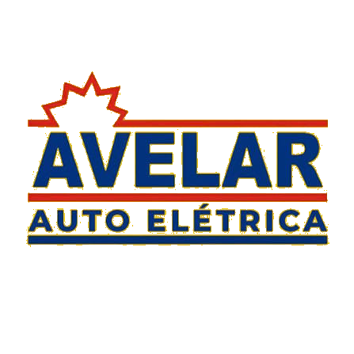
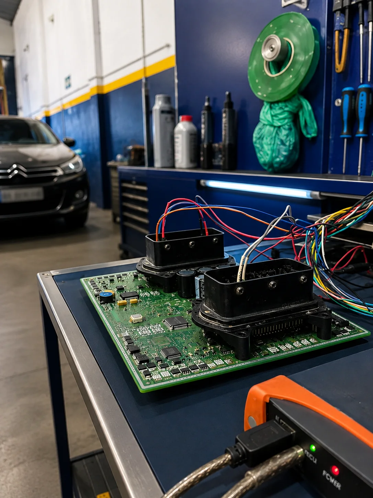
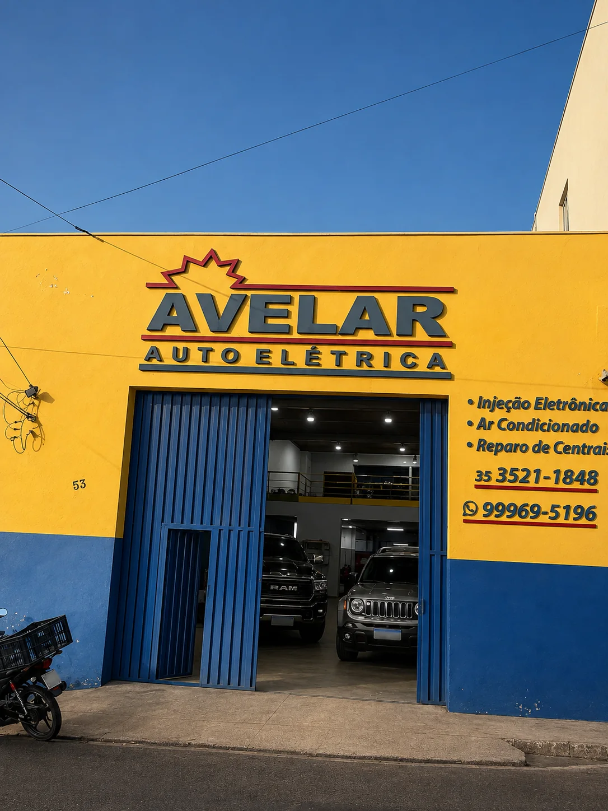

Entender o sintoma
Modelo, ano, motorização e comportamento orientam a triagem.
Atendimento especializado em auto elétrica, injeção eletrônica, ar-condicionado automotivo, reparo de módulos, remap e diagnóstico de veículos leves, pesados e agrícolas.

O processo conecta diagnóstico no veículo com análise eletrônica quando a falha exige ir além do scanner.
Ver todos os serviços →Código de falha é informação. Alimentação, sinais, comunicação e condição real do sistema precisam confirmar a causa antes da decisão.
Modelo, ano, motorização e comportamento orientam a triagem.
Scanner e testes ajudam a separar causa de consequência.
Com a falha confirmada, parte-se para reparo, ajuste ou substituição necessária.

Módulos eletrônicos exigem método, alimentação controlada, leitura, inspeção e testes. A análise evita tratar central como peça descartável.
Conhecer o serviçoA oficina fica na Rua dos Caiçaras, 53. Clientes de outras cidades podem enviar os dados do veículo antes de se deslocar.

Envie modelo, ano, motorização e o que o veículo está apresentando. Isso ajuda na triagem inicial.